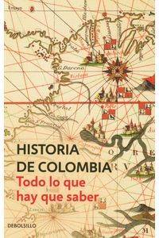

Historia de Colombia. Todo lo que hay que saber
Reseña por Jorge I. Zuluaga

Ver reseña en GoodReads (necesita cuenta)
Hay que leerlo antes que sea demasiado tarde. Tarde porque el libro fue escrito en 2007 y a medida que pasa el tiempo, la exclusión de los eventos históricos muy relevantes de este siglo empiezan a hacer falta para construir el panorama general o entender las ramificaciones de decisiones y eventos que ocurrieron en el pasado. Y tarde también porque hoy más que nunca tenemos que entender la historia de nuestro país para entender los cambios que están ocurriendo o los que deben ocurrir.
Vivimos tiempos difíciles, no solo en Colombia, sino en el mundo. Entender cómo llegamos hasta aquí puede ser una manera de aliviar la angustia de los tiempos de crisis. El conocimiento te libera, una frase trillada pero que tiene mucho sentido cuando de la historia se trata.
Hubo momentos en el pasado donde se produjeron crisis análogas (nunca iguales) de las que Colombia salió bien librada por decisiones afortunadas (también por eventos fortuitos, todo hay que decirlo). Esta es otra de las ventajas de conocer la Historia: aprender a partir de ejemplos del pasado qué decisiones podrían tomarse para enderezar el rumbo (o entender que hay cosas que pueden depender más del azar). Estás son las cosas que a mí, personalmente, me siguen motivando a leer sobre la Historia de Colombia.
"Historia de Colombia, todo lo que hay que saber" es un libro escrito a 7 manos. Sus autores, connotados/as historiadores/as y sociólogos/as colombianos, construyen un relato coherente y continuo (en la medida de sus posibilidades) dividiendo la historia de nuestro país en 7 grandes etapas: el período prehistórico y prehispánico, la denominada conquista (un término cada vez más inadecuado) y la primera etapa de la colonia hasta la llegada de la ilustración, la colonia y la independencia, el surgimiento de la nación hasta el fin de la república liberal, la catástrofe de la regeneración (los juicios son míos), la modernización y las violencias, y del frente nacional hasta el presente (que en el caso del libro es el gobierno de Álvaro Uribe Vélez).
Aunque cada capítulo está escrito por un autor o autora diferente, los editores logran dar una unidad de estilo que permiten leer todo el libro como si hubiera sido producido por una sola persona. A pesar de eso, se pueden notar las diferencias en el enfoque, los ejemplos y las reflexiones de cada uno de los autores.
Sin lugar a dudas mi capítulo y autor favorito fue "¿Regeneración o catástrofe?" de Carlos Uribe Celis. No conocía a este autor pero ya quiero leer otros textos suyos. No sé si fue una decisión premeditada de los editores, pero el que yo creo es el capítulo mejor escrito, se corresponde también a el que fue quizás el período más determinante (para mal) de la historia de Colombia. Se llama Regeneración al proceso por el cuál los conservadores recuperaron el poder (con la ayuda del pseudo liberal Rafael Nuñez) después del único período que ha vivido el país de verdadero liberalismo (el período comprendido entre 1840 y 1886) en el cuál estuvimos casi a la altura, al menos en términos políticos, de otras naciones del mundo, naciones que hoy están mucho más avanzadas económica y socialmente que Colombia. El período comienza con la redacción y puesta en vigencia de la Constitución de 1886, que estuvo vigente por más de 100 años en el país y que hizo de Colombia un país confesional, con libertades ciudadanas limitadas y libertades ejecutivas ilimitadas. Lo que paso durante la Regeneración, que se extendió por más de 30 años hasta 1920 cuando se eligió un presidente liberal, determinó el rumbo social y político del país por todo el siglo XX, incluyendo las causas de las violencias que vivió nuestro país en este fatídico período (violencias que no parecen acabar).
El subtítulo parece pretencioso: "todo lo que hay que saber". Sin embargo, por la extensión y la profundidad de los ensayos, y aún admitiendo que es difícil empacar en poco menos de 400 páginas 500 años de historia, en realidad el libro logra cubrir más o menos exhaustivamente la mayor parte de los eventos relevantes de la Historia del país. He leído otros libros de Historia de Colombia y descubrí en este cosas que no había leído en los otros.
Escribo esta reseña a pocos días de que comience el gobierno de Gustavo Petro, un gobierno que promete iniciar reformas democráticas que no tienen precedentes en el país: una tributación verdaderamente progresiva para los más ricos, el fin de la exploración petrolera y el inicio de la verdadera transición energética necesaria en un planeta en crisis, una verdadera y moderna reforma agraria y de la producción de alimentos que elimine el hambre en un país rico en suelos, la implementación real de los acuerdos de paz de 2016, la reconciliación de todos los actores políticos del país, el inicio de un proceso de paz completo y que incluya a las bandas criminales y de narcotraficantes. Son demasiadas cosas para que se realicen en 4 años. Pero el tamaño de la crisis social y ambiental es tal que es casi impensable que estás reformas no se realicen, incluso más allá del horizonte de tiempo del gobierno de Petro.
Leyendo "Historia de Colombia, todo lo que hay que saber", al fin estoy entendiendo las referencias históricas que se han presentado continuamente durante la campaña presidencial y las que repite en cada entrevista el nuevo presidente. La importancia de la Revolución en Marcha de López Pumarejo en los años 30, el origen del conflicto armado, la problemática de la Tierra que viene desde el nacimiento mismo de la nación en el siglo XIX, etc.
También, por estos mismos días se conoció el primer informe de la Comisión de la Verdad, creada con los acuerdos de Paz de 2016, un documento que está por fin sensibilizando al país de los profundos dramas humanos del conflicto armado de los últimos 60 años y que comenzaron con la descarada y poco democrática repartición del poder entre solo dos partidos, Conservador y Liberal. Leer "Historia de Colombia, todo lo que hay que saber" me ha dado también un poco de perspectiva histórica para entender algunos de los detalles de ese informe, que aunque no he leído, he podido conocer por referencias en los medios y las redes.
Es el momento de aprender de Historia de Colombia y este puede ser un buen libro para ilustrarse ampliamente.
¡Léanlo antes que sea demasiado tarde!